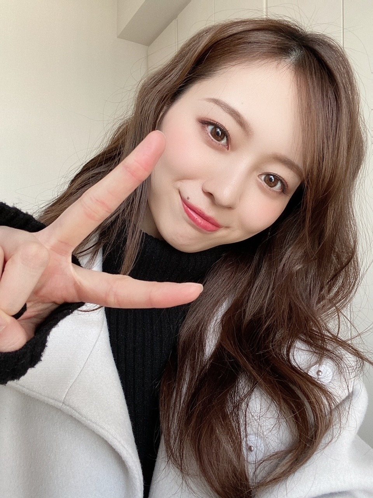
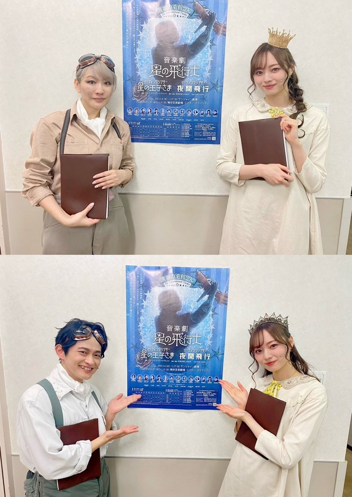
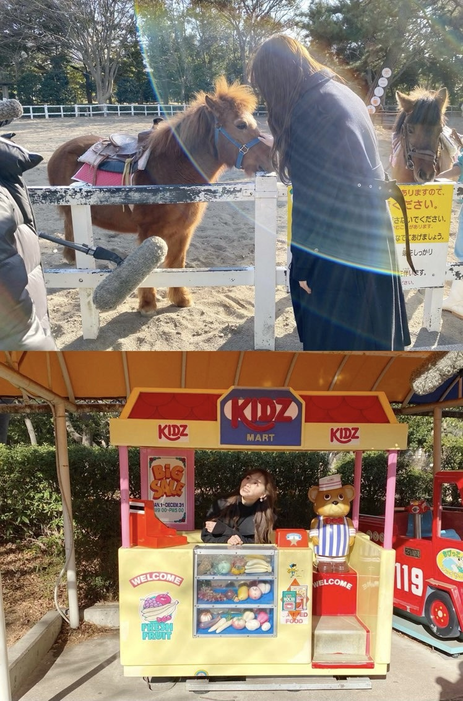
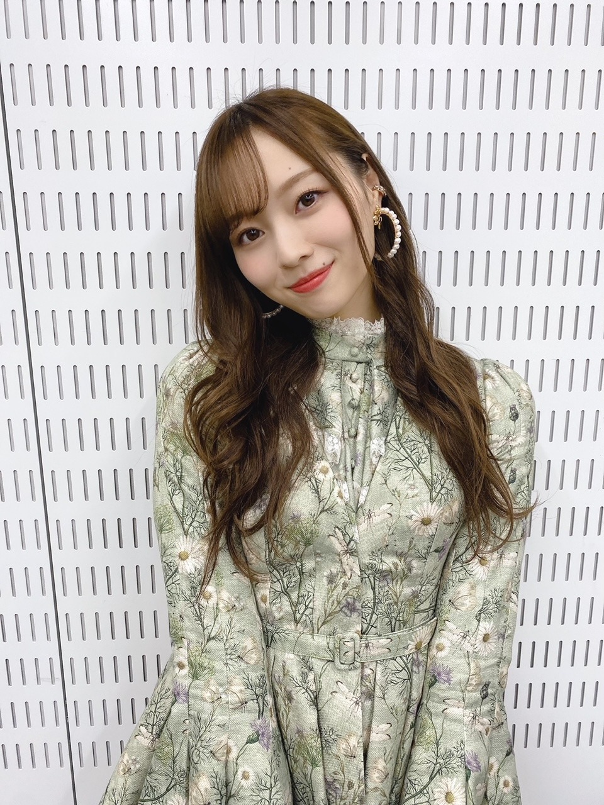

沈黙の意味

保湿に追われている日々です。
お風呂上がっていかに早く
顔のスキンケアと
体の保湿が出来るかが勝負。
皆様いかがお過ごしですか？
僕は僕を好きになる
発売になりました！
選抜発表を受けてから数ヶ月、
あっという間に迎えた発売日。
何ができるか何をすべきか
未来のことを考えましたが
何よりまずは目先にあることへ熱を注ごうと
そう決めて毎日過ごしてきました。
自分とより見つめ合う期間だからこそ
自分の嫌な部分もたくさん見えてきましたが
この感情も自分を好きになる過程に必要な気持ちなんだと
決して下を向くことなく 上を向いて進めている気がします！
この曲が教えてくれたことも
前を向かせてくれた時間もたくさんです！
何より大切で素敵な曲だから
そんな想いが届くようにと
パフォーマンスを重ねてまいりました。
まだまだもっとできると
現状に 自分自身に満足せずにいたいと思っています。たくさん聴いて、たくさん愛してください！

舞台に降りてすぐ撮ったので
まだ目が赤いですね。（笑）
朗読劇 「星の王子さま」
朴璐美さんと下野紘さんと
ご一緒させて頂きました。
とっっっても緊張しました！
このような状況なのもあり、
前日のリモートでの読み合わせが一回きり。
翌日はもう本番。
緊張でどうにかなりそうでしたが
御二方が引っ張って下さり、
物語の世界に入り込むことが出来ました。
いやあ、なんと言っても
舞台上のあの高揚感はたまらなかったです。
舞台袖の匂い、空の状態の客席、
音声チェックの声、楽屋の緊張感、
そしてお客様からの生で頂く拍手...
２年ぶりでした。
最高に素敵な経験をさせて頂きました。
毛利亘宏さんと、またご一緒出来るよう
力をつけて再会したいです！
劇場に足を運んでくださった皆様、
配信で観てくださった皆様、
ありがとうございました。
DVDも発売になりますので
ぜひ。
楽しくお話させてもらってます！
前髪 ぱっつん風にしてみたりしてます！
会いに来て下さる皆様、
本当にありがとうございます~
工夫して 飾り付けしてくれていたり
ケーキや私の好きなチョコを用意してくれていたり
海や夕日、素敵な景色を見せてくれたり
ペットやお子さんと一緒に参加してくれたり
寝起きの普段は見られないような 髪の毛が少しぼさっとした特別な姿が見られたり。
皆様とお話出来て とっても癒されてます！
温かい言葉をたくさんかけていただき
活力になっています。感謝！
１４日にもあるので楽しみにしています。
お洋服何着ようかな~☀︎
「僕たちは居場所を探して」
hulu様にて配信開始しました。
山下、久保、梅澤の私たち３人が
今までと、今と、これからと、
長く、お話させて頂きました。
自分自身のことをここまで話すのは
初めてで中々上手く言葉を繋げることが出来ず
言葉足らずな部分もあるかと思いますが
ぜひ、観ていただけたら嬉しいです
梅澤編、公開中です

幼い頃からの思い出が詰まりに詰まった公園！
昔背中に乗らせてくれた子。
小さい頃何度も乗った乗り物。
今の環境に感謝して、
頂いた経験 言葉 感謝をちゃんとお返しできるように
甘えず、勘違いせず、
しっかり自分を見定め 厳しくありたいなと思っています。
少しずつ 何かを見つけ
冷静に 慎重に 進んでいきたいな~！
１４日は久保編、
２１日は山下編と続きます。
やまとくぼの言葉は
意思が強くかっこよく逞しく、
なんて誇らしい同期なんだと改めて感じました。
ぜひ。
さて！
例年とは違った形ではありますが
開催できること、とても嬉しく思います。
リハーサルでは 想像力がかなり大切で
映像に映し出された時、
どうなるのかワクワクすることばかりです。
ただただ、とにかく歌って踊れる喜び！
初めましての方も多く来てくださり、
笑顔で口にしてくださる方がたくさんいます。
もちろん長く応援してくださる方からの
今年はどうなるんだろう、楽しみにしているね！の声も。
とても大切で 大事にしてきた日であり、
新しいことへの挑戦をみんなで毎年続けてきました。
乃木坂46に関わる全ての方の想いを背負って
挑みたいと思っています！
楽しみにしていてください！
最近見る夢が
歌番組で突然振りを忘れて頭が真っ白になって踊れなくなったり
そんな夢ばっかりみます
おかげで起きたら冷や汗でぐったりです。（笑）
しっかり準備して私たち自身も楽しむぞ~！

素敵な柄です。
アクセサリーもシルエットも
全部全部素敵な衣装。感謝。
また、書きます
おやすみなさい！
気づいたら
ダウンロードしている楽曲の数が
２０００曲を超えていました。
皆様は
どれくらいあるのだろう？
Original：https://www.nogizaka46.com/s/n46/diary/detail/60074?ima=4935&cd=MEMBER